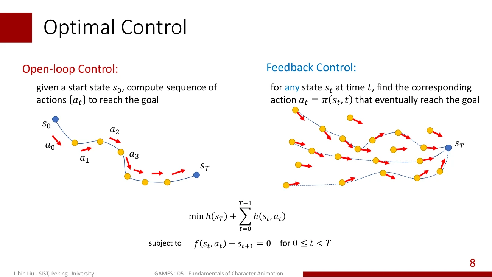
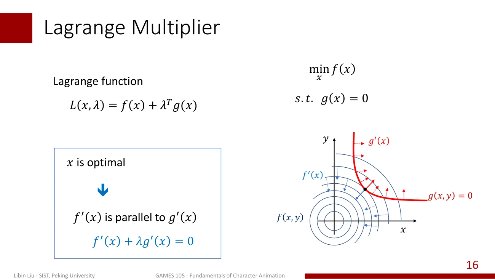
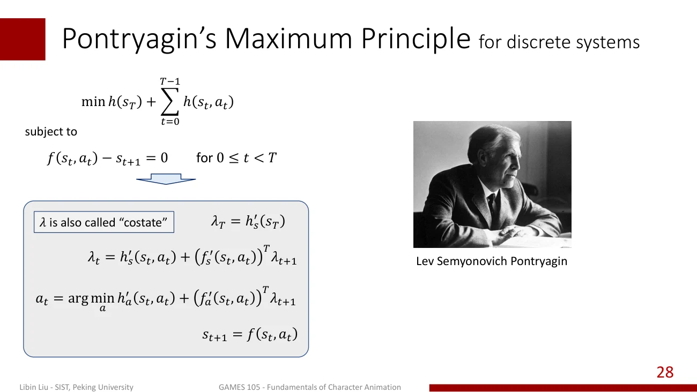
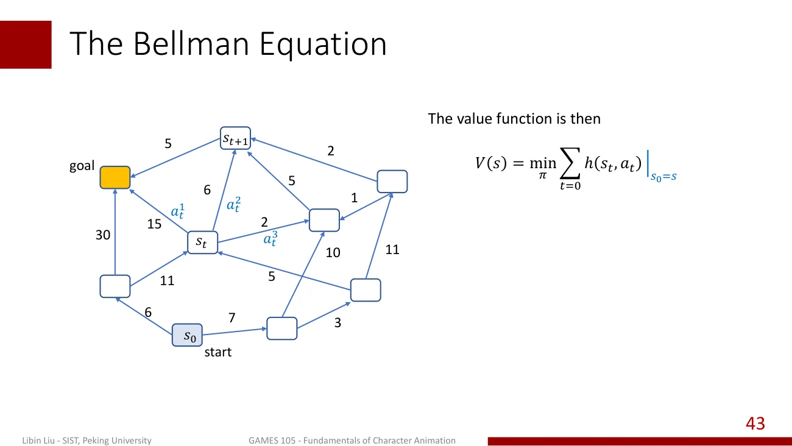
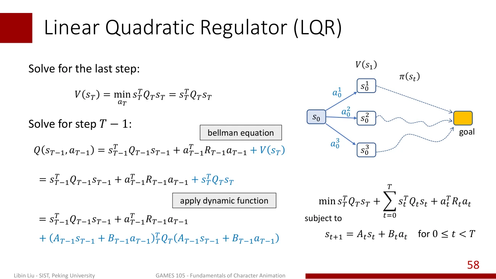
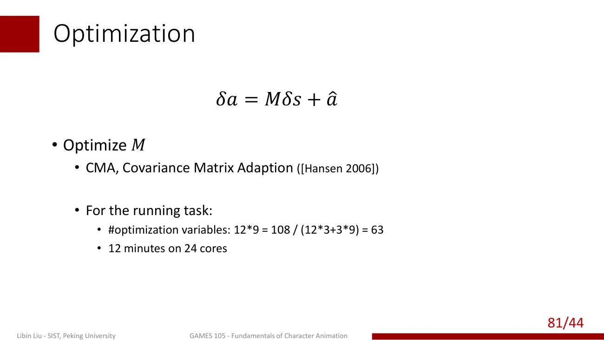
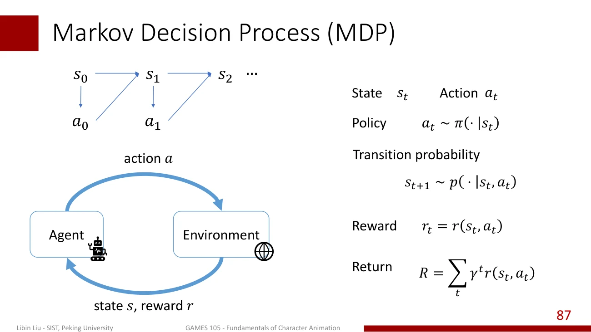

第 12 讲：最优控制与强化学习
从轨迹优化到强化学习，讲清楚如何为角色动画求解最优控制策略
◆ 学完这一讲，你应该能
理解开环控制与反馈控制的区别，以及它们各自适用的场景
掌握最优控制问题的数学形式（目标函数 + 动力学约束），并能写出拉格朗日函数
理解庞特里亚金最大值原理（PMP）的直观含义，知道它为什么难以直接用于复杂角色动画
掌握动态规划与贝尔曼方程，理解值函数、Q 函数以及它们与最优策略的关系
了解 LQR 的适用条件（线性动力学 + 二次型目标）和求解思路（反向递推）
理解基于采样的策略优化（如 CMA-ES）在角色动画中的应用流程
理解强化学习与最优控制的联系与区别，掌握 MDP 的基本要素（状态、动作、转移概率、奖励）
了解基于值函数和策略梯度的强化学习方法，以及它们在角色动画中的典型应用
核心结论速记
最优控制的目标是找到一个控制序列或策略，使得在满足动力学约束的前提下，累积代价最小（或累积奖励最大）。
开环控制只针对一个起始状态求解动作序列，鲁棒性差；反馈控制针对任意状态求解策略，鲁棒性好，但求解更难。
拉格朗日乘子法将约束优化转化为无约束优化，最优性条件是拉格朗日函数对状态、动作和乘子的偏导为零。
庞特里亚金最大值原理（PMP）给出了最优控制的必要条件，但求解两点边值问题在复杂角色动画中非常困难。
动态规划利用贝尔曼最优性原理，将问题分解为子问题，通过值函数递归求解；贝尔曼方程是强化学习的核心。
LQR 是线性动力学 + 二次型目标的最优控制问题，可以通过反向递推得到最优反馈策略。
对于非线性问题，可以用基于采样的方法（如 CMA-ES）优化策略参数，或者用强化学习直接学习策略。
强化学习与最优控制目标一致，但强化学习通常假设模型未知，通过与环境交互学习值函数或策略；MDP 是其数学框架。
01从轨迹优化到最优控制：开环与反馈
这一讲的主题是最优控制（Optimal Control）与强化学习（Reinforcement Learning）。在角色动画中，我们经常需要让虚拟角色完成某个任务（比如走到目标点、跑步、跳跃），而控制就是给角色施加一系列动作（关节力矩或目标姿态）。最优控制要解决的问题是：找到一组合适的控制，使得角色从起始状态出发，在满足物理规律（动力学）的前提下，完成任务的代价最小。
先回顾一下轨迹优化（Trajectory Optimization）。轨迹优化寻找一个控制序列 \(a_t\)，使得状态序列 \(s_t\) 从 \(s_0\) 出发，最小化目标函数： \[ \min_{a_{0:T-1}} \; h(s_T) + \sum_{t=0}^{T-1} h(s_t, a_t) \] 约束为动力学方程 \(s_{t+1} = f(s_t, a_t)\)。这里的 \(h\) 是代价函数（cost），\(h(s_T)\) 是终端代价。
开环控制（Open-loop Control）就是直接求解上述问题，得到一个动作序列 \(a_0, a_1, \dots, a_{T-1}\)。这个序列只对给定的起始状态 \(s_0\) 有效。如果起始状态有偏差，或者过程中有扰动，开环控制就会失败。
反馈控制（Feedback Control）则要找到一个策略（policy）\(\pi(s,t)\)，对于任意状态 \(s\)，都能给出合适的动作 \(a\)。这样即使状态偏离，也能纠正回来。反馈控制更鲁棒，但求解难度更大，因为策略是一个函数，而不是一个有限的序列。
在角色动画中，我们通常希望得到反馈策略，因为角色在仿真环境中会受到各种扰动，而且我们可能希望角色能从不同的初始状态开始运动。

常见坑
把开环控制得到的动作序列直接用在有扰动的仿真中 → 角色会摔倒 → 需要改用反馈控制或加入在线重规划。
误以为反馈控制一定比开环控制好 → 反馈控制求解更复杂，计算代价高，在某些简单场景下开环控制足够。
UE / Unity 落地
在 UE 中，动画蓝图（Animation Blueprint）的状态机可以看作一种手工设计的反馈策略：根据角色状态（速度、方向）选择动画。
物理动画（Physics Animation）中，PD 控制器（PD Controller）是一种反馈控制，用于跟踪目标关节角度。
02约束优化与拉格朗日乘子法
最优控制问题是一个约束优化问题：在满足动力学约束 \(g(x)=0\) 的前提下，最小化目标函数 \(f(x)\)。这里 \(x\) 可以理解为所有状态和动作组成的向量。
处理约束的一种简单方法是软约束：把约束违反程度作为惩罚项加入目标函数，即 \(\min_x f(x) + w g(x)\)，其中 \(w\) 是权重。但这样得到的解可能不严格满足约束，只是近似满足。
更严格的方法是拉格朗日乘子法（Lagrange Multiplier）。对于等式约束 \(g(x)=0\)，构造拉格朗日函数： \[ L(x, \lambda) = f(x) + \lambda^T g(x) \] 其中 \(\lambda\) 是拉格朗日乘子向量。最优解的必要条件是： \[ \frac{\partial L}{\partial x} = 0, \quad \frac{\partial L}{\partial \lambda} = 0 \] 即 \(\nabla f(x) + \lambda^T \nabla g(x) = 0\) 且 \(g(x)=0\)。
几何直观：在最优解处，目标函数的梯度 \(\nabla f\) 与约束曲面的法向量 \(\nabla g\) 平行，否则还可以沿约束曲面移动以减小目标函数。
对于最优控制问题，我们可以把动力学约束 \(s_{t+1} - f(s_t, a_t) = 0\) 用拉格朗日乘子 \(\lambda_{t+1}\) 加入目标函数，得到拉格朗日函数。然后对状态、动作和乘子求偏导，得到一组方程。这组方程就是庞特里亚金最大值原理（PMP）的基础。

常见坑
软约束的权重 \(w\) 取得太小 → 约束被严重违反 → 需要增大权重，但权重太大会导致数值问题。
忘记检查约束是否满足 → 拉格朗日乘子法给出的是必要条件，可能得到非最优解。
UE / Unity 落地
在 UE 的物理资产（Physics Asset）中，约束（Constraint）用于限制关节运动范围，类似于硬约束。
在优化动画时，软约束常用于惩罚脚部滑动等。
03庞特里亚金最大值原理（PMP）
对最优控制问题应用拉格朗日乘子法，我们得到拉格朗日函数： \[ L = h(s_T) + \sum_{t=0}^{T-1} h(s_t, a_t) + \sum_{t=0}^{T-1} \lambda_{t+1}^T (f(s_t, a_t) - s_{t+1}) \] 对 \(s_t\)、\(a_t\) 和 \(\lambda_t\) 求偏导并令其为零，得到一组必要条件，这就是离散系统的庞特里亚金最大值原理（Pontryagin's Maximum Principle, PMP）。
具体来说，定义哈密顿函数（Hamiltonian）： \[ H(s_t, a_t, \lambda_{t+1}) = h(s_t, a_t) + \lambda_{t+1}^T f(s_t, a_t) \] 则最优性条件为：
- 状态方程：\(s_{t+1} = f(s_t, a_t)\)
- 协态方程：\(\lambda_t = \frac{\partial H}{\partial s_t}\)，终端条件 \(\lambda_T = \frac{\partial h(s_T)}{\partial s_T}\)
- 控制最优性：\(a_t = \arg\min_a H(s_t, a, \lambda_{t+1})\)
PMP 将最优控制问题转化为一个两点边值问题（Two-Point Boundary Value Problem）：已知初始状态 \(s_0\) 和终端协态 \(\lambda_T\)，需要求解状态和协态的轨迹。这通常很难求解，尤其是对于高维、非线性的角色动画系统。
因此，PMP 更多用于理论分析，实际中常用数值方法（如打靶法）或动态规划。

常见坑
把 PMP 当作充分条件 → 它只是必要条件，满足 PMP 的解不一定是最优解。
直接使用打靶法求解两点边值问题 → 对初始协态猜测非常敏感，容易发散 → 需要好的初始猜测或改用其他方法。
UE / Unity 落地
UE 中不直接使用 PMP，但理解它有助于理解最优控制的理论基础。
04动态规划与贝尔曼方程
动态规划（Dynamic Programming）是求解最优控制的另一类方法，它基于贝尔曼最优性原理（Bellman's Principle of Optimality）：最优策略的子策略也是最优的。
定义值函数（Value Function）\(V(s)\)：从状态 \(s\) 出发，完成剩余任务的最小总代价。贝尔曼方程给出了值函数的递归定义： \[ V(s) = \min_a \left[ h(s, a) + V(f(s, a)) \right] \] 这个方程表明，当前状态的最优值等于选择动作 \(a\) 后的即时代价加上下一状态的最优值，然后对所有动作取最小。
类似地，定义 Q 函数（Action-Value Function）\(Q(s, a)\)：在状态 \(s\) 执行动作 \(a\) 后的最小总代价。则： \[ Q(s, a) = h(s, a) + V(f(s, a)) \] 并且 \(V(s) = \min_a Q(s, a)\)。
如果我们知道值函数 \(V\)，最优策略就是 \(\pi(s) = \arg\min_a \left[ h(s, a) + V(f(s, a)) \right]\)。
动态规划可以通过迭代求解：初始化 \(V\)，然后反复应用贝尔曼方程更新 \(V\)，直到收敛。但对于连续状态空间，需要函数近似（如神经网络），这就是强化学习中的值函数近似。

常见坑
混淆值函数 \(V(s)\) 和 Q 函数 \(Q(s,a)\) → 值函数只依赖于状态，Q 函数依赖于状态和动作。
在连续状态空间中直接使用表格动态规划 → 状态空间太大，无法存储 → 需要函数近似。
UE / Unity 落地
UE 中的人工智能（AI）行为树可以看作一种手工设计的策略，但不像动态规划那样显式优化值函数。
强化学习插件（如 UE 的 ML Agents）使用神经网络近似值函数或策略。
05线性二次型调节器（LQR）
线性二次型调节器（Linear Quadratic Regulator, LQR）是一类特殊的最优控制问题，其动力学是线性的，目标函数是二次型的： \[ s_{t+1} = A_t s_t + B_t a_t \] \[ \min \; s_T^T Q_T s_T + \sum_{t=0}^{T-1} \left( s_t^T Q_t s_t + a_t^T R_t a_t \right) \] 其中 \(Q_t\) 和 \(R_t\) 是半正定权重矩阵。
LQR 可以通过动态规划反向递推求解。假设值函数是二次型：\(V(s_t) = s_t^T P_t s_t\)，代入贝尔曼方程： \[ V(s_t) = \min_{a_t} \left[ s_t^T Q_t s_t + a_t^T R_t a_t + (A_t s_t + B_t a_t)^T P_{t+1} (A_t s_t + B_t a_t) \right] \] 对 \(a_t\) 求导并令其为零，得到最优控制： \[ a_t = -K_t s_t, \quad K_t = (R_t + B_t^T P_{t+1} B_t)^{-1} B_t^T P_{t+1} A_t \] 其中 \(P_t\) 通过里卡提方程（Riccati Equation）反向递推： \[ P_t = Q_t + A_t^T P_{t+1} A_t - A_t^T P_{t+1} B_t (R_t + B_t^T P_{t+1} B_t)^{-1} B_t^T P_{t+1} A_t \] 终端条件 \(P_T = Q_T\)。
LQR 得到的是线性反馈策略，计算高效，但只适用于线性系统和二次型目标。对于非线性角色动画，通常需要线性化（如 LQR 的扩展）或使用其他方法。

常见坑
忘记终端条件 \(P_T = Q_T\) → 递推无法启动 → 必须从终端开始反向计算。
权重矩阵 \(R_t\) 不是正定的 → 无法求逆 → 确保 \(R_t\) 正定（通常取对角正数）。
UE / Unity 落地
UE 中的 PD 控制器可以看作一种简单的线性反馈，但 LQR 提供了最优的增益设计方法。
在角色动画中，LQR 可用于平衡控制等简化模型。
06基于采样的策略优化
对于非线性、高维的角色动画问题，LQR 不再适用。一种实用的方法是基于采样的策略优化：用参数化的策略 \(\pi(s; \theta)\) 表示控制律，然后通过采样优化参数 \(\theta\) 来最小化目标函数 \(J(\theta)\)。
常用算法是 CMA-ES（Covariance Matrix Adaptation Evolution Strategy，协方差矩阵自适应进化策略）。它通过迭代采样一批参数，评估其代价，然后更新采样分布（均值和协方差），逐步逼近最优参数。
在角色动画中，一个典型流程（以 Liu 等人的 Terrain Runner 为例）是：
- 先用开环轨迹优化得到参考动作（reference actions）和参考状态。
- 设计线性反馈策略：\(\delta a = M \delta s + \hat{a}\)，其中 \(\delta a = a - \tilde{a}\)，\(\delta s = s - \tilde{s}\)，\(\tilde{a}\) 和 \(\tilde{s}\) 是参考动作和状态。
- 为了降低维度，只选择部分状态维度（如跑步时的几个关键维度）和部分控制维度。
- 用 CMA-ES 优化矩阵 \(M\) 的参数。
这种方法结合了轨迹优化和策略优化，能够得到鲁棒的反馈控制器。

常见坑
策略参数太多 → CMA-ES 收敛慢 → 需要降维（选择关键状态和控制维度）。
参考动作质量差 → 优化后的策略性能受限 → 先确保开环轨迹优化得到合理的参考动作。
UE / Unity 落地
UE 中可以通过蓝图或 C++ 实现 CMA-ES 优化，但通常需要外部计算。
Unity 的 ML-Agents 提供了基于强化学习的策略优化，但 CMA-ES 需要自己实现。
07强化学习与马尔可夫决策过程
强化学习（Reinforcement Learning, RL）与最优控制目标一致：最大化累积奖励（或最小化累积代价）。但强化学习通常假设模型未知，智能体通过与环境交互来学习。
马尔可夫决策过程（Markov Decision Process, MDP）是强化学习的数学框架，由以下要素组成：
- 状态空间 \(S\)，动作空间 \(A\)
- 转移概率 \(p(s_{t+1} | s_t, a_t)\)：在状态 \(s_t\) 执行动作 \(a_t\) 后转移到 \(s_{t+1}\) 的概率。
- 奖励函数 \(r(s_t, a_t)\)
- 折扣因子 \(\gamma \in [0,1]\)
策略 \(\pi(a|s)\) 给出在状态 \(s\) 下选择动作 \(a\) 的概率。目标是找到最优策略最大化期望累积折扣奖励： \[ J(\pi) = \mathbb{E}_{\tau \sim \pi} \left[ \sum_{t=0}^{\infty} \gamma^t r(s_t, a_t) \right] \]
贝尔曼方程在强化学习中同样适用，但以期望形式出现： \[ V^\pi(s) = \mathbb{E}_{a \sim \pi} \left[ r(s,a) + \gamma \mathbb{E}_{s' \sim p} V^\pi(s') \right] \] 最优值函数满足： \[ V^*(s) = \max_a \left[ r(s,a) + \gamma \mathbb{E}_{s' \sim p} V^*(s') \right] \]
求解 MDP 的方法包括基于值函数的方法（如 DQN）和策略梯度方法（如 PPO）。在角色动画中，这些方法已被用于学习运动控制策略。

常见坑
混淆奖励和代价 → 强化学习最大化奖励，最优控制最小化代价，两者符号相反。
折扣因子 \(\gamma\) 设置不当 → 太大导致学习不稳定，太小导致短视 → 通常取 0.99 左右。
UE / Unity 落地
Unity ML-Agents 提供了 PPO 等强化学习算法的实现，可用于训练角色控制策略。
UE 中可以通过插件（如 ML Agents 的 UE 版本）集成强化学习。
引擎对照表
| 概念 / 效果 | Unreal Engine | Unity |
|---|---|---|
反馈控制策略 | 动画蓝图状态机、PD 控制器 | Animator 状态机、Configurable Joint |
轨迹优化 | Sequencer 中手动调整动画，或使用物理动画 | Timeline 编辑动画 |
强化学习训练 | ML Agents 插件（社区版） | ML-Agents Toolkit |
LQR 控制器 | 需要自定义 C++ 实现 | 需要自定义 C# 实现 |
CMA-ES 优化 | 外部计算后导入动画数据 | 外部计算后导入动画数据 |
术语双语表
| English | 中文 | 说明 |
|---|---|---|
| Optimal Control | 最优控制 | 在满足动力学约束下最小化代价函数，求解控制序列或策略。 |
| Open-loop Control | 开环控制 | 只针对给定起始状态求解动作序列，不依赖反馈。 |
| Feedback Control | 反馈控制 | 根据当前状态求解动作的策略，对扰动鲁棒。 |
| Lagrange Multiplier | 拉格朗日乘子 | 处理等式约束优化，构造拉格朗日函数。 |
| Pontryagin's Maximum Principle | 庞特里亚金最大值原理 | 最优控制的必要条件，导出两点边值问题。 |
| Dynamic Programming | 动态规划 | 基于贝尔曼最优性原理，递归求解值函数。 |
| Bellman Equation | 贝尔曼方程 | 值函数的递归定义，是强化学习的核心。 |
| LQR | 线性二次型调节器 | 线性动力学+二次型目标的最优控制，可解析求解。 |
| MDP | 马尔可夫决策过程 | 强化学习的数学框架，包含状态、动作、转移概率、奖励。 |
| CMA-ES | 协方差矩阵自适应进化策略 | 一种无梯度的优化算法，常用于策略参数优化。 |
课后练习
01 简述开环控制与反馈控制的主要区别，并说明为什么角色动画中通常更倾向于使用反馈控制。
查看答案
提示：
从鲁棒性和求解难度两方面考虑。
开环控制只针对一个给定的起始状态求解一个动作序列，不根据实际状态调整，因此对扰动和模型误差很敏感，鲁棒性差。反馈控制求解的是一个策略（从状态到动作的映射），能够根据当前状态实时调整动作，因此对扰动有更好的鲁棒性。角色动画中，仿真环境存在数值误差和外部扰动，且角色可能从不同初始状态开始运动，所以反馈控制更适用。但反馈控制的求解通常更复杂，计算代价更高。
02 写出离散时间最优控制问题的拉格朗日函数，并说明庞特里亚金最大值原理中的哈密顿函数是什么。
查看答案
提示：
拉格朗日函数包含终端代价、过程代价和动力学约束。
拉格朗日函数：\(L = h(s_T) + \sum_{t=0}^{T-1} h(s_t, a_t) + \sum_{t=0}^{T-1} \lambda_{t+1}^T (f(s_t, a_t) - s_{t+1})\)。哈密顿函数定义为 \(H(s_t, a_t, \lambda_{t+1}) = h(s_t, a_t) + \lambda_{t+1}^T f(s_t, a_t)\)。PMP 的最优性条件包括状态方程、协态方程 \(\lambda_t = \partial H / \partial s_t\) 和控制最优性 \(a_t = \arg\min_a H\)。
03 考虑一个简单的一维线性系统：\(s_{t+1} = s_t + a_t\)，目标函数为 \(\sum_{t=0}^{T-1} (s_t^2 + a_t^2) + s_T^2\)。请写出 LQR 的反向递推公式，并说明如何求解最优控制增益。
查看答案
提示：
值函数假设为二次型 \(V(s_t) = P_t s_t^2\)。
对于一维系统，\(A=1, B=1, Q=1, R=1, Q_T=1\)。反向递推：终端 \(P_T = 1\)。对于 \(t = T-1\) 到 0：\(P_t = Q + A^T P_{t+1} A - A^T P_{t+1} B (R + B^T P_{t+1} B)^{-1} B^T P_{t+1} A\)。代入得 \(P_t = 1 + P_{t+1} - \frac{P_{t+1}^2}{1 + P_{t+1}}\)。最优增益 \(K_t = (R + B^T P_{t+1} B)^{-1} B^T P_{t+1} A = \frac{P_{t+1}}{1 + P_{t+1}}\)。最优控制 \(a_t = -K_t s_t\)。
04 解释强化学习中的值函数 \(V^\pi(s)\) 和 Q 函数 \(Q^\pi(s,a)\) 的含义，并写出它们之间的关系。
查看答案
提示：
从期望累积奖励的角度考虑。
\(V^\pi(s)\) 表示从状态 \(s\) 出发，遵循策略 \(\pi\) 所能获得的期望累积折扣奖励。\(Q^\pi(s,a)\) 表示在状态 \(s\) 执行动作 \(a\) 后，再遵循策略 \(\pi\) 所能获得的期望累积折扣奖励。关系为：\(V^\pi(s) = \sum_a \pi(a|s) Q^\pi(s,a)\)，且 \(Q^\pi(s,a) = r(s,a) + \gamma \mathbb{E}_{s' \sim p} V^\pi(s')\)。
05 在基于采样的策略优化中，为什么要对状态和控制进行降维？请结合角色动画的例子说明。
查看答案
提示：
考虑优化变量的数量和采样效率。
在角色动画中，状态空间（如关节角度、速度）和控制空间（如关节力矩）维度很高，直接优化完整策略参数会导致维度灾难，采样效率极低，优化难以收敛。通过降维，只选择对任务最关键的状态和控制维度（如跑步时的躯干朝向、腿部关节等），可以大幅减少优化变量个数，提高采样效率，使 CMA-ES 等算法能够在可接受的时间内找到较好的策略。例如，Liu 等人的 Terrain Runner 中，跑步任务只选择了 4 个状态维度和少量控制维度。